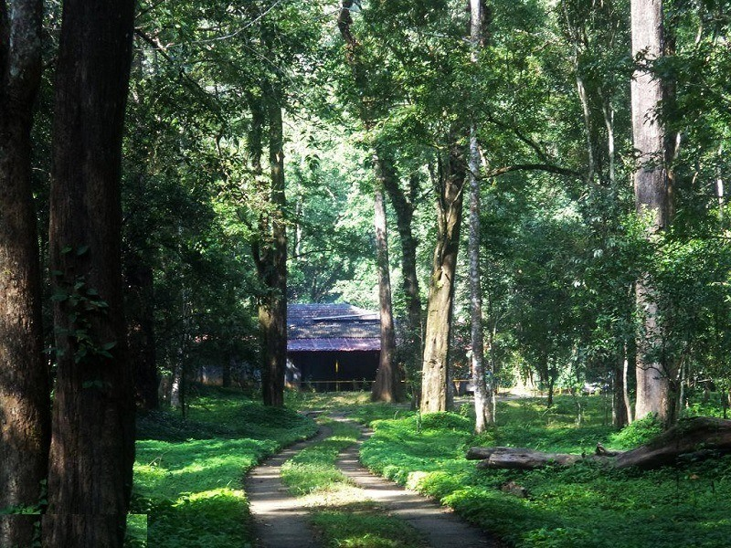
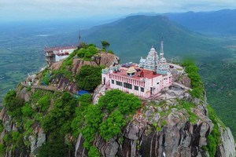
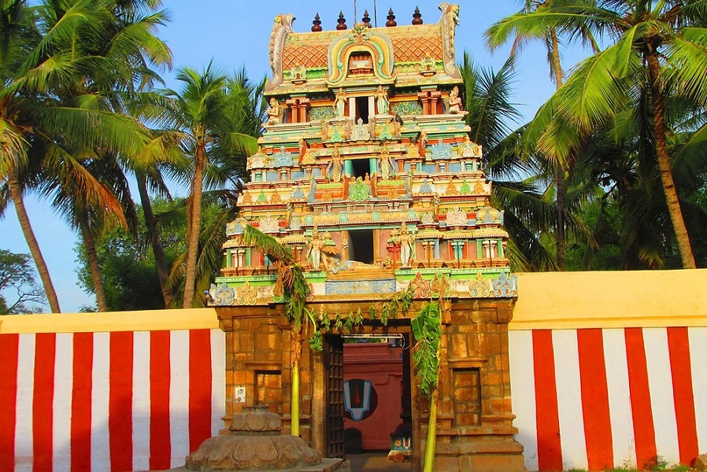
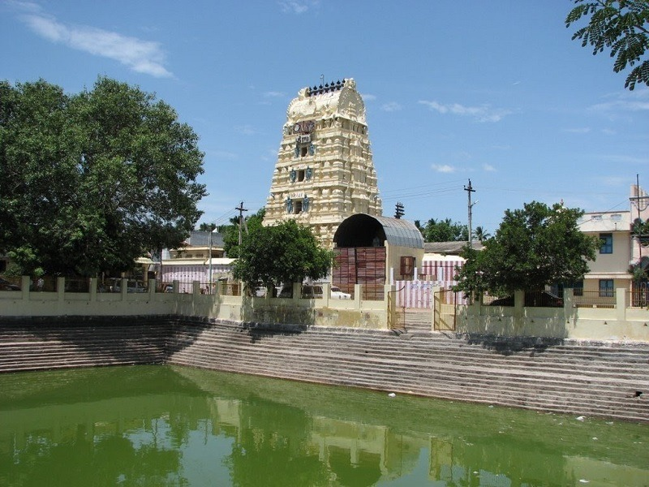
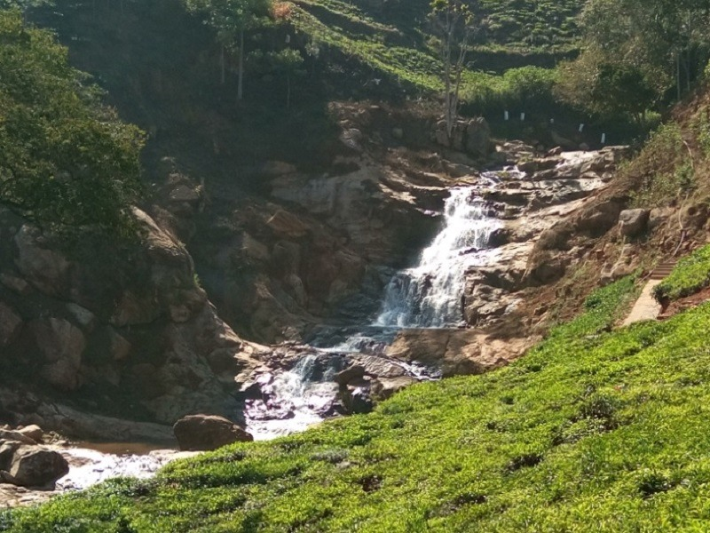
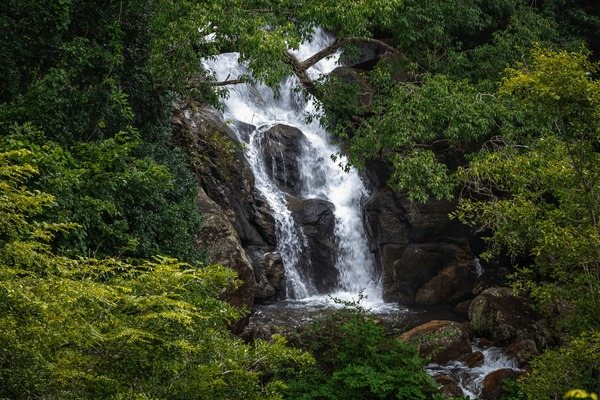
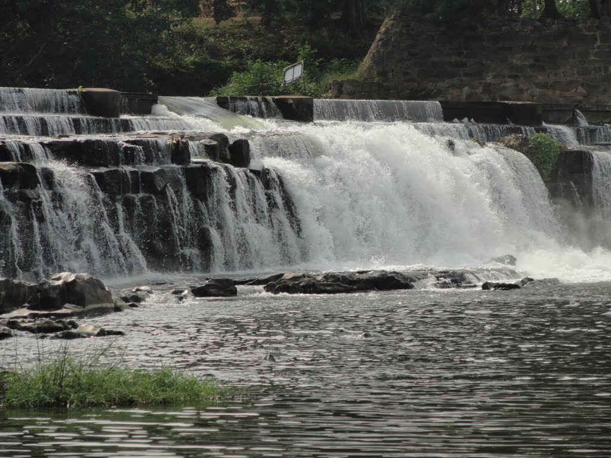
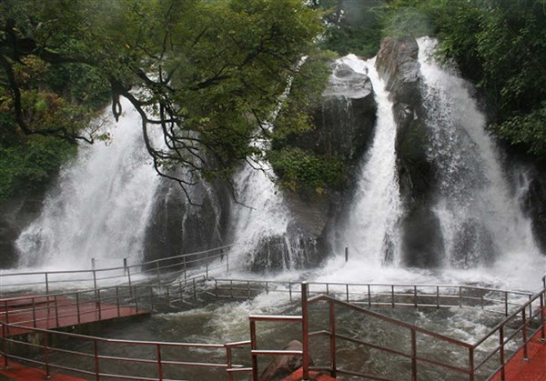
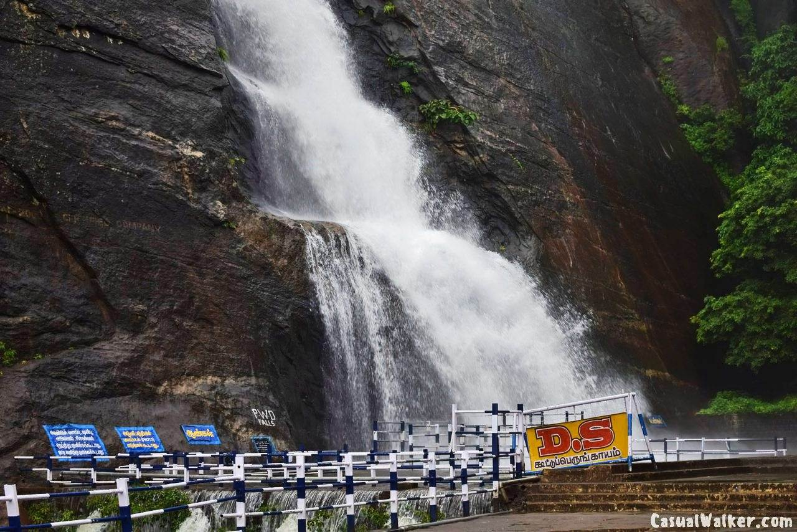
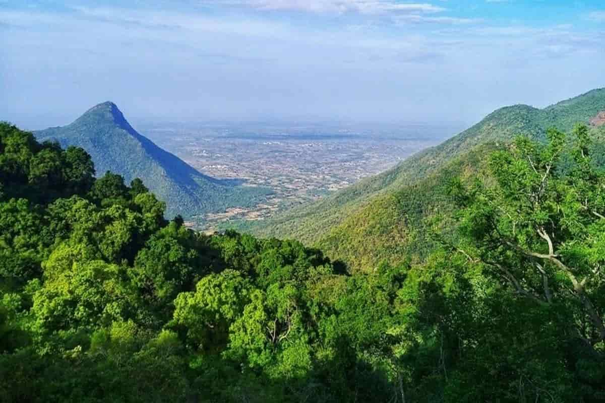

Manampalli Forest, located within the Anamalai Tiger Reserve, is known for its rich biodiversity,
particularly its dense
shola forests, and is a popular trekking destination. Key features include
its location between
Sholayar Dam and
Valparai, diverse wildlife, and proximity to other
attractions like Top Slip and Parambikulam.
1. Location and Accessibility:
It is situated within the Anamalai Tiger Reserve, between Sholayar Dam and Valparai,
requiring an
8km trek through the
jungle from the main road to reach the forest.
2. Biodiversity:
Manampalli is known for its rich fauna, including elephants, bison, deer, and endangered
species
like the Lion-tailed
macaque and Nilgiri tahr.
3. Trekking Destination:
The forest is a favorite spot for trekking enthusiasts due to its thick shola forests, fast-flowing
rivers, and
beautiful peaks.
4. Proximity to Attractions:
It's geographically bordered by Top Slip and Parambikulam, making it an ideal location for
exploring
the broader
Anamalai region.
5. Unique Features:
The forest boasts a small rest house at its foothills, which can serve as a base camp for trekkers,
and is known for its
lack of human interference and presence of the Manompally River

Parvathamalai, also known as Parvatha Malai, is a sacred mountain in Tamil Nadu with a challenging trek
to a
2000-year-old Shiva temple at its summit. It's known for its religious significance, scenic beauty, and
unique trekking
experience.
1. Sacred Mountain:
Parvathamalai is a revered hill considered to be a remnant of the Sanjeevani Mountain mentioned in the
Ramayana.
2. Shiva Temple:
A 2000-year-old temple dedicated to Lord Shiva, specifically worshipped as Mallikarjuna, is located at
the summit.
3. Challenging Trek:
The trek to the top is considered moderately difficult, involving a steep climb over rocky terrain, with
some sections
requiring the use of iron rods and chains for support.
4. Scenic Views:
The trek offers panoramic views of the surrounding Tiruvannamalai and Jawadhu hills, especially from the
higher
altitudes.
5. Spiritual Significance:
Devotees believe the mountain has a powerful spiritual energy, and many Siddhars (enlightened beings)
are said to
meditate and practice yoga there.
6. Medicinal Plants:
The Parvathamalai forest is home to a variety of rare and medicinal plants, some found only in this
region.

The Sri Vadivazhagiya Nambi Perumal Temple, also known as the Sundararaja Perumal Temple,
is an
important Vaishnavite
temple located in Thiru Anbil, Tamil Nadu. It is one of the
108 Divya Desams, revered sites in Sri
Vaishnavism. The
temple is situated on the northern bank
of the Kollidam River and is known for its Dravidian
architectural style.
1. Divya Desam:
It is one of the 108 Divya Desams, considered sacred by Sri Vaishnavas.
2. Dravidian Architecture:
The temple showcases the distinctive Dravidian architectural style, featuring a five-tiered
Rajagopuram (main gateway
tower).
3. Reclining Posture:
The presiding deity, Vadivazhagiya Nambi Perumal, is enshrined in a reclining posture,
symbolizing
peace and grace.
4. King Sundara Chola's Devotion:
The temple is associated with King Sundara Chola, who donated wealth to the temple after
his
victories.
5. Sage Mandooka's Redemption:
The temple is linked to the legend of Sage Mandooka, who was cursed to become a frog
and was later
freed from the curse
at this temple.

The Eri Katha Ramar Temple in Madurantakam, Tamil Nadu, is a significant Vaishnavite temple dedicated to
Lord Rama,
known for the legend of him saving the local lake from flooding. The temple, also known as Kodanda
Ramaswamy temple, is
historically important, built during the Pallava era and later enhanced during the Chola period.
1. Legend of the Lake's Protection:
The temple's name, "Eri Katha Ramar," translates to "Rama who saved the lake," stemming from the popular
belief that
Lord Rama appeared to protect the Madhuranthakam lake from overflowing during heavy rains.
2. Temple's Historical Significance:
The temple is believed to have been constructed during the Pallava period and further developed during
the Chola
dynasty. The Cholas referred to Madurantakam as "Madurantaka Chaturvedi Mangalam".
3. Unique Idol of Rama:
The main deity, Lord Rama, is depicted in a standing posture, holding Sita's hand, which is a unique
feature not
commonly seen in other Rama temples.
4. Dedicated Shrines:
The temple complex includes shrines for Sita (Janakavalli Thayar), Lakshmana, Hanuman, and Ramanuja.
5. Historical Connection with Ramanuja:
The temple is also known for its connection with the Vaishnava saint Ramanuja, who received his Pancha
Samskara mantra
here. The location where he received the mantra is still preserved.

Quin Waterfall, located in Kotagiri, is a picturesque waterfall known for its scenic beauty and
accessibility. It's a
popular spot for day picnics and is easily reachable from nearby towns
like Ooty, Kotagiri, and
Coonoor.
1. Location and Accessibility:
Quin Waterfall is situated in the Nilgiris district, specifically in Kotagiri, near Puthumandhu
village within a tea
estate. Private taxis and local transportation options make it relatively
easy to reach from major
towns.
2. Scenic Beauty:
The waterfall is renowned for its captivating view of water cascading down through the gaps
between
boulders. It offers
a tranquil and refreshing experience, making it a favored
destination for nature lovers.
3. Accessibility:
Visitors can access the falls by trekking through the tea plantations for about 1-2 kilometers
from
the parking area.
4. Picnic Spot:
Quin Waterfall is a popular spot for day picnics, offering a serene environment for relaxation
and
enjoyment.
5. Free Entry:
There is no entry fee to visit Quin Waterfall, making it an accessible and budget-friendly
attraction.

Ulakkai Aruvi Waterfalls, located in Kanyakumari district, Tamil Nadu, is a beautiful and refreshing
spot accessible by
a trek through the Western Ghats.
1. Location and Accessibility:
It's situated about 20 km from Nagercoil and 39 km from Kanyakumari, nestled within the Western Ghats.
The falls are
reached by a trek through the forest, starting from near Perunthalaikadu village.
2. Trekking Experience:
The trek to the waterfalls is considered moderate, taking visitors through rocky and forested paths.
It's a good spot
for those who enjoy trekking and rock climbing.
3. Seasonal Flow:
The falls are best visited after the June-July monsoon season to witness the full flow of the water.
During other times,
the water flow may be less.
4. Safety Precautions:
While trekking, it's important to be cautious, wear appropriate footwear, and be mindful of the slippery
rocks,
especially after rain. Avoid swimming in the pools during strong currents.
5. Nature and Adventure:
Ulakkai Aruvi offers a blend of natural beauty and adventure activities. Visitors can enjoy the
refreshing waters of the
pool at the base, admire the surrounding landscape, and indulge in activities like rock climbing and
rappelling. The
area is also known for its rich flora and fauna, making it ideal for wildlife photography and bird
watching.

Kodiveri Dam, located on the Bhavani River near Gobichettipalayam, Tamil Nadu, is a popular
picnic
spot known for its
scenic beauty and the small, gentle waterfall created by the dam's
outflow.
1. Scenic Waterfall:
The dam creates a charming waterfall where the river water flows gently, making it safe for
swimming
and bathing.
2. Picnic Spot:
Kodiveri Dam is a well-known picnic destination, attracting visitors with its natural beauty
and
recreational
opportunities.
3. Coracle Rides and Fresh Fish:
Coracle rides are available for tourists, and visitors can also enjoy freshly caught and cooked
fish
from the local
vendors.
4. Irrigation:
Besides its recreational value, the dam plays a crucial role in irrigating over 25,000 hectares
of
land.
5. Entry Fee:
A nominal entry fee is charged for access to the dam and the surrounding area, making it an
affordable outing.
6. Historical Significance:
The dam was built in the 12th century AD by the Vettuva Gounder King and was constructed
using a
20-foot rock wall,
interlocking stones with iron bars, and lead as mortar.

Five Falls, also known as Aintharuvi, is a popular waterfall in Courtallam, Tamil Nadu, known for its
unique cascading
structure where the water splits into five distinct streams. It's a major tourist attraction, often
compared to the
mythical Adisesha due to its five-pronged flow.
1. Five Streams:
The most distinctive feature is the water naturally dividing into five separate falls as it descends,
creating a
visually striking and unique spectacle.
2. Location and Accessibility:
It's located near the main Courtallam Falls and is easily accessible by road, with good parking
facilities.
3. Temples and Eco Park:
The falls are situated adjacent to an Eco Park maintained by the Horticulture department and near
temples dedicated to
Swami Ayyappa and Vinayaka.
4. Bathing Sections:
Three of the five falls are designated for men, and two for women, ensuring safe and comfortable bathing
for all
visitors.
5. Revered by Locals:
Locals hold the falls in high regard, comparing its five streams to the mythical five-headed serpent,
Adisesha, and
appreciating its natural beauty and therapeutic waters.

Pazhaya Courtallam, also known as Old Courtallam, is a quieter, less crowded waterfall in
Courtallam, Tamil Nadu,
offering a serene bathing experience with separate areas for
men and women. It is known for its
natural
beauty, with
steps carved into the rock to break the
water's force, making it safe for bathing. The falls are
located
about 10 km
from the main town,
and are easily accessible by road.
1. Quieter Alternative:
Unlike the busier Main Falls, Pazhaya Courtallam offers a more peaceful and less crowded
experience,
making it ideal for
those seeking a tranquil bath.
2. Safety Features:
Steps are carved into the rock to reduce the impact of the falling water, making it safe for
bathing,
and there are
separate bathing areas for men and women.
3. Scenic Beauty:
The waterfall is known for its natural beauty, with the water cascading down a rock face,
creating a
picturesque
setting.
4. Accessibility:
Pazhaya Courtallam is easily accessible by road, and parking is available close to the falls,
with a
short walk required
to reach the bathing area.
5. Oil Massage Facilities:
There are areas near the falls where visitors can enjoy soothing oil massages, adding to the
relaxation
and rejuvenation
offered by the location.

To enhance the Pachaimalai Hills near Thuraiyur, here are five potential improvement points: enhanced
tourism
infrastructure, improved access roads, better waste management, increased eco-friendly initiatives, and
community-based
tourism development.
1. Enhanced Tourism Infrastructure:
Developing well-maintained pathways, viewpoints, and rest areas with proper signage and information
boards can
significantly improve the visitor experience.
2. Improved Access Roads:
The existing roads leading to the Pachaimalai Hills and within the hills themselves can be upgraded and
maintained to
ensure safer and easier access for tourists and locals. This will also help in facilitating
transportation of goods and
services.
3. Better Waste Management:
Implementing a comprehensive waste management system, including regular garbage collection, proper
disposal methods, and
promoting recycling and waste reduction, is crucial for preserving the natural beauty of the hills.
4. Increased Eco-Friendly Initiatives:
Promoting responsible tourism practices, such as guided nature walks, trekking, and birdwatching, while
minimizing
environmental impact, can help protect the hills' ecosystem.
5. Community-Based Tourism Development:
Involving the local tribal communities in tourism initiatives, such as providing accommodation, guiding
tours, and
selling local handicrafts, can empower them economically and ensure that the benefits of tourism are
shared with the
local population.